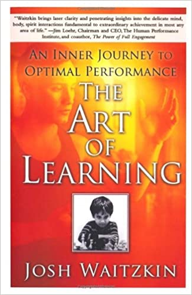
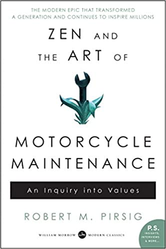
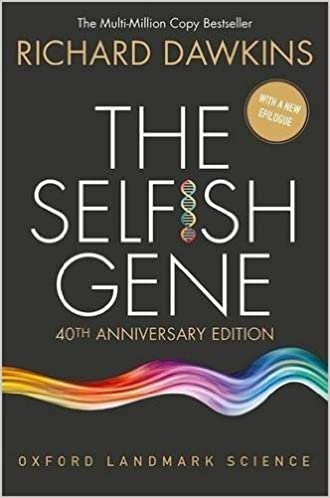

2020 Reading List
Reading Now
- The Republic, Plato
- Dracula, Bram Stoker
Read So Far
- The Art of Learning
- Can't Hurt Me
- Zen and the Art of Motercycle Maintenance
- Dune
- Neverwhere
- Travels with Charley in Search of America
- A Room with a View
- American Gods
- The Selfish Gene

The Art of Learning
Josh Waitzkin
Date read: March 2020
Strength of recomendation: 9 / 10
Amazon page
Waitzkin provides a wealth of wisdom in the space of high performance psychology. My second time reading this book.
Can't Hurt Me
David Goggins
Date read: March 2020
Strength of recomendation: 9 / 10
Amazon page
The only audiobook I've ever listened to a second time as soon as I finished the first. Goggins overcame child abuse, poverty, and small-town racism to go on to lose over a 100 lbs and become a celebrated Navy SEAL and ultramarathon runner. Absolutely inspirational.

Zen and the Art of Motercycle Maintenance
Robert M. Pirsig
Date read: April 2020
Strength of recomendation: 10 / 10
Amazon page
A philosophical dive into the intersection of rationality, intuition, and values. This work greatly shaped the way I see Eastern and Western thought.
Dune
Frank Herbert
Date read: April 2020
Strength of recomendation: 9 / 10
Amazon page
A masterpiece of world-building and story. I found myself listening to the audiobook for hours into the night, lost in Herbert's fiction.

Neverwhere
Neil Gaiman
Date read: May 2020
Strength of recomendation: 7 / 10
Amazon page
A fun book, though unlikely to be remembered as Gaiman's greatest work.
Travels with Charley in Search of America
John Steinbeck
Date read: June 2020
Strength of recomendation: 7 / 10
Amazon page
Steinbeck's road trip across America with his French poodle Charley makes for a charming and enjoyable read.
Notes:
So I drove up the mountain and found a dairy, bought some milk, and asked permission to camp under an apple tree. The dairy man had a Ph.D. in mathematics, and he must have had some training in philosophy. He liked what he was doing and he didn't want to be somewhere else - one of the very few content people I met in my whole journey.
I'd like to imagine this figure as a living specimen of the archetypal old wise man, contented to live a life of simplicity.
He put my sins in a new perspective. Whereas they had been small and mean and nasty and best forgotten, this minister gave them some size and bloom and dignity... I wasn't a naughty child but a first rate sinner.
...
All across the country I went to church on Sundays, a different denomination every week, but nowhere did I find the quality of that Vermont preacher. He forged a religion designed to last, not predigested obsolescence.
There’s something deeply unsatisfying about the idea that one’s sins are of little or no consequence. To instead recognize the human propensity to do real terrible evil gives meaning to one’s actions, and simultaneously makes indisputable not only one’s capacity, but one’s necessity, to do good in the world.
Like most Americans I am no lover of cops, and the consistent investigation of city forces for bribery, brutality, and a long picturesque list of malfeasances is not designed to reassure me.
Reading this in a book published in 1962 sobered me to what difficult, fundamental, and longlasting problems police brutality and corruption are, especially in light of the now recent murder of George Floyd.
A Room with a View
E. M. Forster
Date read: June 2020
Strength of recomendation: 6 / 10
Amazon page
Although I appreciated Forster's beautiful prose and the positive spirit of his ultimately feminist message, I couldn't help but feel the central romance of this novel has become, at least for a modern reader, predictable almost to the point of cliche.
Notes:
There is only one perfect view—the view of the sky straight over our heads, and that all these views on earth are but bungled copies of it.
Above our heads is the heavenly ideal. It is that which we look up to with our aspirations and good intentions, that which we try to bring about in this world.
Men fall into two classes—those who forget views and those who remember them, even in small rooms.
Taken with the previous quote, perhaps Forster is suggesting that men either care for seeing and doing what is right in the world or they reject and forget these ideals altogether.
“Life” wrote a friend of mine, “is a public performance on the violin, in which you must learn the instrument as you go along.”
American Gods
Neil Gaiman
Date read: July 2020
Strength of recomendation: 8 / 10
Amazon page
A thrilling novel. Gaiman employs gods old and new, providing deep insight into America and the nature of human belief.

The Selfish Gene
Richard Dawkins
Date read: July 2020
Strength of recomendation: 9 / 10
Amazon page
Dawkins explores economic and evolutionary theory to explain the interplay of selfishness and altruism in nature. Worth reading alone for the incredible descriptions of regicidal insect colonies, game-theoretic fig trees, and the first ever use of the word meme.
Bonus: Spanish Titles
- Harry Potter y la Piedra Filosofal, J. K. Rowling
- Percy Jackson: El Ladron del Rayo, Rick Riordan
- Percy Jackson: El Mar de los Monstruos, Rick Riordan